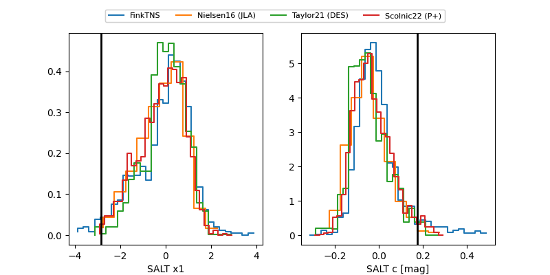

FINK: ZTF25abpdxzo
Lasair: ZTF25abpdxzo
ALeRCE: ZTF25abpdxzo
TNS: 2025wur
YSE: 2025wur
ZTF25abpdxzo (ztf,fink)
2025wur (tns,yse)
ATLAS25lbk (atlas)
equatorial (ra, dec) = (82.9616,-10.44597)
galactic (l, b) = (213.4736,-22.36815)

last atlasc=19.10, atlaso=18.35, ztfg=19.32, ztfr=18.84
1 atlasc, 7 atlaso, 4 ztfg, 4 ztfr detections